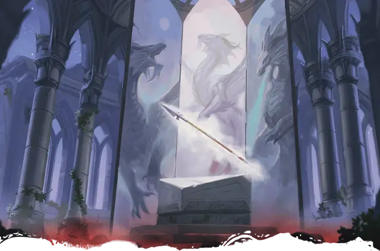

Драконье копьё
Dragonlance
Оружие (длинное копьё или пика), легендарное (требуется настройка)

Рекомендованная стоимость от 50 001 зм
Драконье копье - это известное оружие, выкованное из редкого металла с помощью мощных артефактов, связанных с Багамутом. Различные копья выковываются для использования пехотинцами (в виде пик) и всадниками (в виде длинных копий), но магические свойства оружия остаются одинаковыми.
Вы получаете бонус +3 к броскам атаки и урона, совершённым этим магическим оружием.
Если вы попадаете им по Дракону, это существо получает дополнительный урон 3к6 урона силовым полем, и любой Дракон по вашему выбору, которого вы можете видеть в пределах 30 футов от вас, реакцией может немедленно совершить рукопашную атаку.